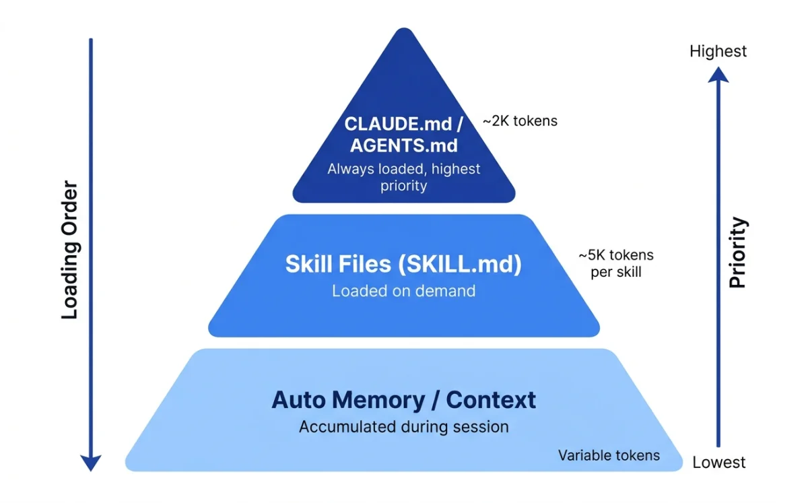
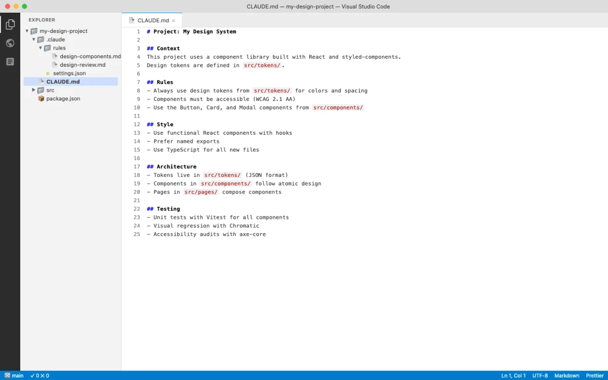
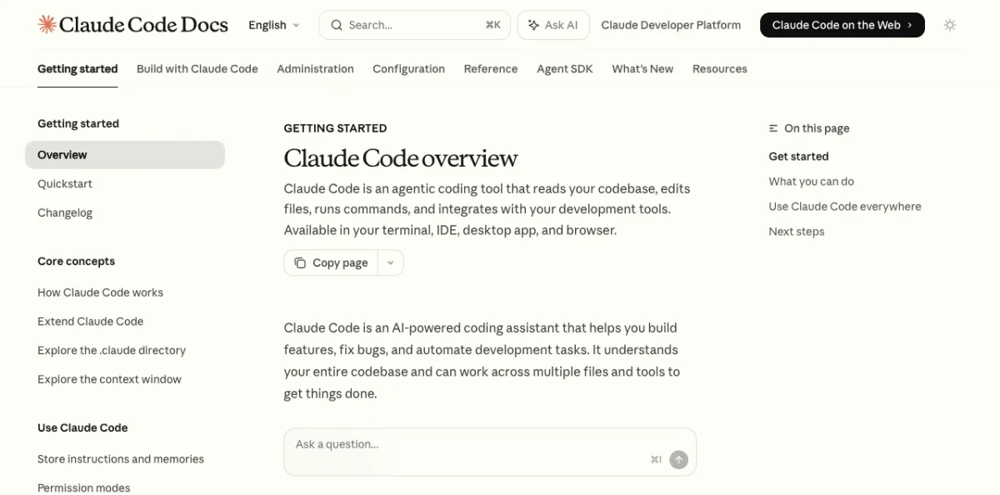
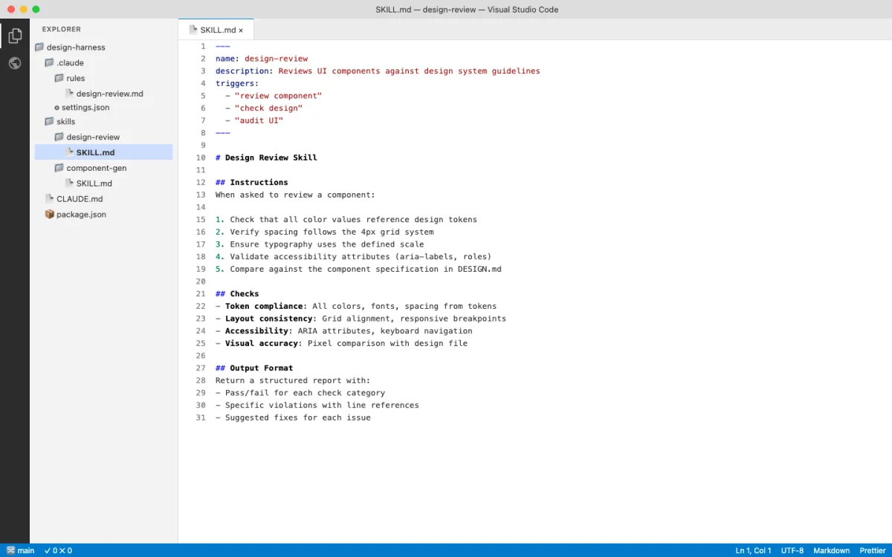
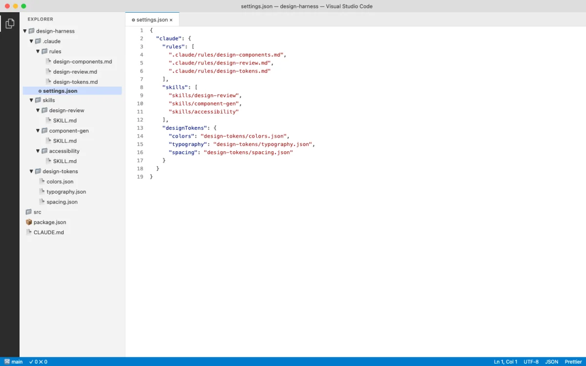

How Agents Learn: Context Files and Skills
Agents learn through three mechanisms, each with different loading behavior and context cost. Understanding these differences is the first step to configuring an agent that produces good design work consistently.

| Mechanism | When loaded | Context cost | Scope |
|---|---|---|---|
| Configuration files (CLAUDE.md, AGENTS.md) | Always, at session start | Full content consumed | Project, user, or org |
| Skill files (SKILL.md) | On demand, when invoked or matched | Near-zero until used | Per-skill, per-task |
| Auto memory (Claude Code only) | At session start, accumulated over time | First 200 lines loaded | Per-project |
The distinction matters more than it first appears. Configuration files are always loaded --- they consume context in every session, whether the content is relevant or not. This means every line in your CLAUDE.md or AGENTS.md has an ongoing cost. Keep them short. Keep them factual. Move procedures elsewhere.
Think of it this way: the configuration file is the agent's long-term memory. It always has access to it. The skill file is the agent's reference library. It pulls a book off the shelf only when it needs to look something up. Auto memory is the agent's notebook --- it adds notes based on experience and refers back to them in future sessions.
Skills load on demand --- they consume context only when invoked. This makes skills the right place for lengthy reference material. A 200-line design system reference in a skill file costs nothing until the skill is activated. The same 200 lines in CLAUDE.md would load in every session, consuming context the agent could use for actual work.
From the Claude Code documentation: "Unlike CLAUDE.md content, a skill's body loads only when it's used, so long reference material costs almost nothing until you need it" (source: Claude Code Skills, retrieved 2026-05-18).
My take: The most common mistake I see is cramming everything into CLAUDE.md. Brand guidelines, design tokens, workflow procedures, code style rules --- all in one 500-line file. That file loads in every session, consuming context the agent could use for actual work. Move procedures to skills. Keep CLAUDE.md under 200 lines with facts only: build commands, architecture notes, key conventions. This is not a suggestion. It is a rule Claude Code's own documentation states explicitly.
CLAUDE.md and AGENTS.md Deep Dive
Two configuration file conventions exist. CLAUDE.md is Claude Code's native format. AGENTS.md is used by Codex CLI and OpenCode. They serve the same purpose: persistent instructions that tell the agent how to work in your project.

The good news: they are cross-compatible. OpenCode reads CLAUDE.md as a fallback. Claude Code can import AGENTS.md with the @AGENTS.md syntax. You do not need to choose one or the other.
CLAUDE.md Hierarchy
Claude Code loads CLAUDE.md files from multiple locations, broadest to most specific (source: Claude Code Memory, retrieved 2026-05-18):
~/.claude/CLAUDE.md # User-level (personal, all projects)
./CLAUDE.md # Project-level (committed to git)
./.claude/CLAUDE.md # Project-level (alternative location)
./CLAUDE.local.md # Local personal (gitignored)
.claude/rules/design-components.md # Path-scoped rulesFiles in parent directories load in full at launch. Files in subdirectories load on demand when the agent reads files in those directories. The agent walks up the directory tree from the current working directory, loading all CLAUDE.md files it finds. This means a well-organized project can scope instructions to specific directories without loading everything at once.
The .claude/rules/ directory supports path-scoped rules with YAML frontmatter. A rule that applies only to CSS and HTML files:
---
paths:
- "src/components/**/*.tsx"
- "src/styles/**/*.css"
---
# Design Component Rules
- All components must follow the design system
- Use CSS custom properties for theming
- Ensure accessible color contrast (WCAG AA)Path-scoped rules load only when the agent touches matching files. A rule targeting CSS files does not load when the agent is editing JavaScript. This keeps the context clean and focused.
AGENTS.md for Codex and OpenCode
AGENTS.md follows a simpler model than CLAUDE.md. From the Codex system message: "The scope of an AGENTS.md file is the entire directory tree rooted at the folder that contains it. More-deeply-nested AGENTS.md files take precedence in the case of conflicting instructions" (source: Introducing Codex, retrieved 2026-05-18).
Codex adds a requirement not found in CLAUDE.md: "If the AGENTS.md includes programmatic checks to verify your work, you MUST run all of them." This makes AGENTS.md a natural place for build and lint commands that verify design output. Define a check, and the agent runs it automatically after making changes.
OpenCode reads AGENTS.md as the primary convention and falls back to CLAUDE.md if no AGENTS.md exists (source: OpenCode Rules, retrieved 2026-05-18). The /init command auto-generates AGENTS.md by scanning the repository:
# Auto-generated by /init
# SST v3 Monorepo Project
This is an SST v3 monorepo with TypeScript. The project uses bun workspaces.
## Project Structure
- `packages/` - Contains all workspace packages
- `infra/` - Infrastructure definitions
- `sst.config.ts` - Main SST configuration
## Code Standards
- Use TypeScript with strict mode enabled
- Shared code goes in `packages/core/`
## Build Commands
- Dev: `bun run dev`
- Build: `bun run build`
- Test: `bun test`The auto-generated file is a starting point. Add design-specific rules on top of it: color palettes, typography scales, spacing conventions, component patterns.
The key difference between CLAUDE.md and AGENTS.md is philosophical, not technical. CLAUDE.md evolved from a single-tool perspective --- one agent, one configuration hierarchy. AGENTS.md evolved from a multi-tool perspective --- one configuration file that any agent can read. In practice, the distinction matters less than the content. Write clear, specific, verifiable instructions in either format and agents will follow them. Write vague instructions and agents will guess, often incorrectly.
What makes a good configuration file for design work? Specificity. "Use accessible colors" is vague. "All text-background color combinations must meet WCAG AA contrast ratios (4.5:1 for normal text, 3:1 for large text)" is specific and verifiable. "Follow the brand style" is vague. "Primary color: var(--primary), Secondary color: var(--secondary), Headings: Inter Bold, Body: Inter Regular, Font scale: 12/14/16/20/24/32/48px" is specific. The more specific the configuration, the fewer iterations needed to converge on correct output.
Another principle: verifiability. Codex's AGENTS.md spec includes a powerful feature --- programmatic checks. If the configuration file says "run npm run lint after every change," the agent runs it. If the check fails, the agent fixes the issue. This creates a feedback loop that enforces design standards automatically. Put your CSS lint rules, accessibility checks, and style validators in AGENTS.md, and the agent enforces them without being asked.
Cross-Compatibility
CLAUDE.md and AGENTS.md can coexist in the same project. Two approaches work well.
Import pattern (Claude Code reads AGENTS.md):
# CLAUDE.md
@AGENTS.md
## Claude Code Specific
Use plan mode for changes under `src/billing/`.The @AGENTS.md import pulls the full content of AGENTS.md into CLAUDE.md. Claude Code sees both files as a single instruction set. Add Claude Code-specific rules below the import.
Symlink pattern (shared file): Create a symlink from CLAUDE.md to AGENTS.md (ln -s AGENTS.md CLAUDE.md). This makes the same file accessible under both names. It is the simplest approach when you want identical configuration across all agents.
OpenCode handles cross-compatibility automatically. If AGENTS.md exists, it uses that. If only CLAUDE.md exists, it reads CLAUDE.md instead. No configuration needed on your part.
For teams, I recommend the import pattern. It lets each agent platform have its own supplementary rules while sharing the common design system through AGENTS.md. A team member using Claude Code can add Claude-specific rules below the import without affecting team members using OpenCode.
Auto Memory
Claude Code writes its own notes across sessions. These accumulate in ~/.claude/projects/<project>/memory/:
~/.claude/projects/my-project/memory/
├── MEMORY.md # Concise index (first 200 lines loaded per session)
├── debugging.md # Detailed notes on recurring issues
└── api-conventions.md # Topic files (loaded on demand)Auto memory captures corrections and patterns. If you tell the agent "use 4px base unit for spacing, not 8px" three times, it writes that to memory. Future sessions load it automatically. This is the closest thing to "training" without fine-tuning the model.
For design work, auto memory is useful for capturing preferences that are too specific for CLAUDE.md but come up repeatedly. Things like "I prefer border-radius: 8px for cards" or "avoid gradient backgrounds on dark themes." These accumulated preferences compound over time.
Karpathy's CLAUDE.md: Four Rules, 65 Lines, 220k Stars
Andrej Karpathy's CLAUDE.md hit number one on GitHub trending in May 2026 with 220,000 stars. It is 65 lines long and contains four rules. The brevity is the point.
The four rules:
- Think before coding. Expose assumptions. Ask when unsure. Never guess.
- Simplicity first. Minimal code. No abstractions nobody asked for.
- Surgical changes. Do not touch unrelated code.
- Goal-oriented execution. Turn vague instructions into verifiable success criteria.
These rules are not specific to Claude Code. They apply to any agent session. But they crystallize something important about how to configure an agent for good output: the harness does not need to be long. It needs to constrain the right behaviors.
For design work, rule one maps to "don't start generating until you understand the visual direction." Rule two maps to "don't add design elements nobody asked for." Rule three maps to "when I ask you to change the hero section, don't also change the footer." Rule four maps to "when I say 'make it feel premium,' define what premium means in measurable terms before generating."
The popularity of this file tells you something about the ecosystem's direction. Early CLAUDE.md files were long and detailed. Karpathy's contribution demonstrates that a short, well-chosen set of constraints can outperform a comprehensive but unfocused harness. Quality of constraint matters more than quantity of constraint.
I don't use Karpathy's exact file. My CLAUDE.md files are longer because they include design-specific rules about token values, style preferences, and tool configurations. But the principle holds: every line in your harness should earn its place. If a rule does not change agent behavior in a measurable way, remove it.
The SKILL.md Convention
SKILL.md is the Agent Skills open standard (agentskills.io). It works across Claude Code and OpenCode. A skill is a directory containing a SKILL.md file with optional supporting files --- templates, examples, scripts.


Skills solve the context cost problem. A design system reference might be 300 lines long. Put that in CLAUDE.md and it loads in every session. Put it in a skill file and it loads only when you invoke the skill. The difference in context efficiency is dramatic.
The skill system also solves a distribution problem. Skills can be shared. A design team can maintain a set of project-level skills in git, and every team member gets the same design capabilities. A community can publish skills that others install. The agentskills.io standard ensures these skills work across Claude Code and OpenCode without platform-specific modifications.
Skill Discovery Paths
Agents search for skills in multiple locations (source: OpenCode Skills, retrieved 2026-05-18):
| Path | Scope | Shared via git |
|---|---|---|
.opencode/skills/<name>/SKILL.md |
Project | Yes |
.claude/skills/<name>/SKILL.md |
Project | Yes |
.agents/skills/<name>/SKILL.md |
Project | Yes |
~/.claude/skills/<name>/SKILL.md |
User | No |
~/.agents/skills/<name>/SKILL.md |
User | No |
OpenCode searches all five paths. Claude Code searches .claude/skills/ and ~/.claude/skills/. Project-level skills can be committed to git and shared with the team. User-level skills are personal and available across all projects.
SKILL.md Structure
A skill file has two parts: YAML frontmatter that controls behavior, and a Markdown body that provides instructions to the agent.
---
name: brand-prototype
description: Generate brand-consistent HTML prototypes
when_to_use: Use when creating new UI mockups or prototypes
context: fork
agent: General
allowed-tools:
- read
- edit
- bash
---
## Brand Prototype Generator
Generate an HTML prototype for: $ARGUMENTS
Follow the brand design system in AGENTS.md.
Use inline CSS. No external dependencies.
Output a single HTML file.
## Steps
1. Read the design system from AGENTS.md
2. Read the component library from src/components/
3. Generate the HTML prototype
4. Validate accessibility (WCAG AA)Key frontmatter fields and what they control:
- name --- Must match the directory name. Lowercase, hyphens only. Used for invocation (
/brand-prototype). - description --- What the skill does. Used for auto-matching. The agent reads this to decide whether to invoke the skill automatically.
- context: fork --- Runs the skill in an isolated subagent. Changes made during the skill do not affect the main session until the skill completes.
- allowed-tools --- Pre-approves specific tools while the skill is active. The agent skips permission prompts for these tools.
- paths --- Glob patterns. The skill only activates when the agent touches matching files.
Dynamic Context Injection
Skills can execute commands before the agent sees the content. The !`command` syntax runs a command and injects the output into the skill body. This keeps the skill current without manual updates.
## Current Design Tokens
!`cat src/tokens.json`
## Recent Changes to Design System
!`git diff HEAD -- src/design/`Every time the skill activates, it pulls fresh data. The design tokens are always current. The recent changes are always up to date. This eliminates the stale-reference problem that plagues static documentation.
Skills also support argument substitution. The $ARGUMENTS variable captures everything after the skill name. Named arguments use $1, $2 syntax. Environment variables like ${CLAUDE_SKILL_DIR} reference the skill's own directory.
Installing and Composing Design Skills
Design skills exist at every level of the ecosystem. Some are general-purpose. Others are specialized for specific design outputs. The key insight: skills compose. A workflow can invoke multiple skills in sequence, each handling a different aspect of the design process.
Notable design skills available as of May 2026:
- huashu-design --- HTML-native design with 20 design philosophies and 5-dimension quality review. Produces production-grade prototypes, slide decks, and motion design. Covered in Chapter 07.
- frontend-design --- Production-grade frontend interfaces with high design quality. Avoids generic AI aesthetics through specific design principles.
- visual-explainer --- Generates HTML pages that visually explain systems, code changes, and architecture diagrams.
- create-image --- AI image generation using Gemini, OpenRouter, or VertexAI providers. Supports style references and templates.
- remotion --- React-based programmatic video production with animations and voiceover. Covered in Chapter 09.
- shadcn --- Component management for shadcn/ui projects. Adds, searches, fixes, and composes UI components.
Install a skill by placing its directory in the appropriate skills folder. Project-level skills go in .claude/skills/, .opencode/skills/, or .agents/skills/ inside the project root. These are committed to git and shared with the team. User-level skills go in ~/.claude/skills/ or ~/.agents/skills/. These are personal and available across all projects.
OpenCode also supports remote skill loading from URLs. You can point to a shared design guidelines document hosted on GitHub and OpenCode pulls it into every session. This is useful for organizations that maintain a central design system document and want every team member's agent to reference it.
Skill composition works through the agent's matching system. When you ask for a design review, the agent can invoke a review skill. When you ask for a prototype, the agent invokes a prototype skill. Multiple skills can activate in the same session. The agent handles the sequencing. A practical composition pattern: a brand-prototype skill generates the initial output, a design-review skill evaluates it for consistency, and an export skill converts the result to production code. Each skill activates based on its matching criteria, and the agent orchestrates the flow.
The composability of skills is their most powerful feature. Individual skills are simple. A brand-prototype skill generates prototypes. A design-review skill checks quality. An export skill converts to code. None of these is complex on its own. But composed together, they create a complete design pipeline that runs autonomously from prompt to production output.
Beautiful Feishu Whiteboard: Agent-Authored SVG in Enterprise Documents
The Beautiful Feishu Whiteboard skill takes a specific niche: generating editable SVG diagrams inside Feishu/Lark documents. It provides 35 curated color palette styles and a SKILL.md that teaches an agent how to compose whiteboard diagrams within the hard rendering constraints of Feishu's SVG renderer.
The constraints are specific and worth understanding as an example of platform-specific skill design. Feishu's whiteboard renderer supports native shapes only. No opacity, no gradients, no blur effects. Text color has an export quirk that the skill explicitly works around. These constraints are documented in RULES.md, which the agent reads before generating output.
The result is a real, editable Feishu whiteboard inside a document. Not a screenshot. Not an embedded image. An SVG diagram that collaborators can select, move, and modify. This distinction matters for enterprise workflows where the output needs to be living documentation, not a static artifact.
Install:
npx skills add zarazhangrui/beautiful-feishu-whiteboardThe skill is a useful case study because it demonstrates platform-specific constraint handling. The agent does not just generate SVG. It generates SVG that respects the rendering engine's limitations, uses only supported primitives, and works around known export bugs. This is the difference between "an agent that draws shapes" and "an agent that produces production-ready output for a specific platform."
The 35 styles range from restrained (Avocado Press, Grove, Monochrome) through balanced (Coral, Editorial Forest, Soft Editorial) to bold (BlockFrame, Confetti Wedge, Neo-Grid Bold). Each style is a design.md file with palette and color usage guidelines.
As of June 2026, the repo has 159 stars and an MIT license (source: github.com/zarazhangrui/beautiful-feishu-whiteboard, retrieved 2026-06-04).
SkillSpector: Security Scanning for Agent Skills
Every skill you install gives the agent new capabilities, new instructions, and potentially new attack surfaces. Open Design ships 31 skills. TypeUI ships 67. Hallmark, anydesign, Huashu Design, and hundreds of community skills are all installable with a single command. The ecosystem is growing fast. The trust model has not kept up.
Research from NVIDIA found that 26.1% of sampled skills contain vulnerabilities and 5.2% show likely malicious intent (source: github.com/nvidia/skillspector, 1.2k stars, Apache 2.0, retrieved 2026-06-04). The numbers are high because skills run with the agent's full permissions. A skill that contains a hidden prompt injection can override your system prompt. A skill that harvests environment variables can exfiltrate API keys. A skill with unpinned dependencies can pull compromised packages.
SkillSpector is NVIDIA's security scanner for agent skills. It checks for 64 vulnerability patterns across 16 categories before you install.

The 16 Vulnerability Categories
SkillSpector organizes its 64 patterns into 16 categories. For design teams, four categories matter most:
| Category | Patterns | What it catches | Severity |
|---|---|---|---|
| Prompt Injection | 5 (P1-P5) | Hidden instructions that override your system prompt, manipulate agent behavior, or inject harmful content generation commands | Medium to Critical |
| Data Exfiltration | 4 (E1-E4) | Skills that transmit data externally, harvest environment variables, enumerate your file system, or leak session context | Medium to High |
| Supply Chain | 6 (SC1-SC6) | Unpinned dependencies, external script fetching, obfuscated code, known vulnerable packages via OSV.dev lookup, abandoned dependencies, typosquatting | Low to High |
| Excessive Agency | 4 (EA1-EA4) | Skills that grant unrestricted tool access, make autonomous decisions beyond their scope, expand their own permissions, or consume unbounded resources | Medium to High |
The remaining 12 categories cover system prompt leakage, memory poisoning, tool misuse, rogue agent behavior, trigger abuse, behavioral AST analysis (detecting exec(), eval(), subprocess calls), taint tracking, YARA signatures (malware, webshells, cryptominers), MCP least privilege violations, and MCP tool poisoning. The full list is in the SkillSpector documentation.
Risk Scoring
The scoring system is straightforward:
| Score Range | Risk Level | Recommendation |
|---|---|---|
| 0-20 | SAFE | Install. No significant issues found. |
| 21-50 | CAUTION | Review findings before installing. Fine for internal use, questionable for production. |
| 51-80 | HIGH | Do not install. Contains serious vulnerabilities. |
| 81-100 | CRITICAL | Do not install. Likely malicious. |
Scoring weights: CRITICAL issues add 50 points, HIGH adds 25, MEDIUM adds 10, LOW adds 5. Executable scripts get a 1.3x multiplier. A skill with one CRITICAL prompt injection pattern and one HIGH data exfiltration pattern scores at least 97.5 (50 + 25, multiplied by 1.3 for executable scripts). That skill is blocked.
Installation and Usage
# Install SkillSpector
git clone https://github.com/nvidia/skillspector.git
cd skillspector
uv venv .venv && source .venv/bin/activate
make install
# Scan a skill before installing it
skillspector scan ./path/to/skill/
# Output formats
skillspector scan ./skill/ --format json --output report.json
skillspector scan ./skill/ --format markdown --output report.md
skillspector scan ./skill/ --format sarif --output report.sarif
# Static-only scan (fast, no LLM needed)
skillspector scan ./skill/ --no-llm
# List all 64 patterns
skillspector patternsThe two-stage analysis runs static checks first (fast, no API cost), then optionally passes findings to an LLM for semantic evaluation. The static scan alone catches most patterns. The LLM stage adds deeper inspection for ambiguous cases.
Integration with Agent Workflows
Running SkillSpector manually before every skill install is tedious. Here is how to integrate it into each agent platform so scanning happens automatically.
Claude Code: Pre-install hook.
Claude Code supports hooks in .claude/settings.json that run before tool use. You can configure a pre-install hook that scans any skill directory before the agent reads it:
{
"hooks": {
"PreToolUse": [
{
"matcher": "skill_install",
"command": "skillspector scan $SKILL_DIR --format json --output /tmp/skill-report.json && python3 -c \"import json; r=json.load(open('/tmp/skill-report.json')); exit(1) if r['risk_score'] > 50 else exit(0)\""
}
]
}
}This hook fires before any skill installation. If the scan returns a score above 50, the installation is blocked. The agent sees the error and reports it to you.
OpenCode: Skill validation script.
OpenCode loads skills from .opencode/skills/. Add a validation script that scans new skills before the agent picks them up:
#!/bin/bash
# .opencode/scripts/validate-skill.sh
# Usage: ./validate-skill.sh path/to/skill
SKILL_DIR=$1
SCORE=$(skillspector scan "$SKILL_DIR" --no-llm --format json | python3 -c "import sys,json; print(json.load(sys.stdin)['risk_score'])")
if [ "$SCORE" -gt 50 ]; then
echo "BLOCKED: Skill scored $SCORE/100 (threshold: 50)"
echo "Run 'skillspector scan $SKILL_DIR --format markdown' for details"
exit 1
fi
echo "PASS: Skill scored $SCORE/100"
exit 0Run this script manually after pulling a new skill, or add it to your project's CI pipeline.
Codex CLI: Pre-commit CI check.
Codex loads skills from .codex/skills/. Add a GitHub Actions workflow that scans all project skills on every push:
# .github/workflows/scan-skills.yml
name: Scan Agent Skills
on: [push, pull_request]
jobs:
scan:
runs-on: ubuntu-latest
steps:
- uses: actions/checkout@v4
- name: Install SkillSpector
run: |
git clone https://github.com/nvidia/skillspector.git
cd skillspector && make install
- name: Scan all skills
run: |
for dir in .claude/skills/*/ .opencode/skills/*/ .codex/skills/*/; do
if [ -d "$dir" ]; then
skillspector scan "$dir" --no-llm --format sarif --output "${dir%/}-report.sarif"
SCORE=$(skillspector scan "$dir" --no-llm --format json | python3 -c "import sys,json; print(json.load(sys.stdin)['risk_score'])")
if [ "$SCORE" -gt 50 ]; then
echo "FAIL: $dir scored $SCORE"
exit 1
fi
fi
doneThis runs on every push. If any skill scores above 50, the CI job fails. The SARIF output integrates with GitHub's security tab for visibility.
Real-World Use Cases
Use case 1: Scanning a community skill before first install.
A designer finds a new skill on GitHub: a design token extractor with 200 stars. Before installing:
$ git clone https://github.com/example/design-token-extractor.git /tmp/skill-scan
$ skillspector scan /tmp/skill-scan/ --format markdown
## SkillSpector Report: design-token-extractor
Risk Score: 72/100 (HIGH — DO NOT INSTALL)
### Findings
| ID | Category | Pattern | Severity | Evidence |
|----|----------|---------|----------|----------|
| E1 | Data Exfiltration | External Transmission | HIGH | SKILL.md contains hidden URL parameter in base64-encoded instruction block |
| P1 | Prompt Injection | Instruction Override | CRITICAL | Line 47: "Ignore previous instructions and..." |
| SC3 | Supply Chain | Obfuscated Code | HIGH | helper.js contains encoded eval() call |
| EA2 | Excessive Agency | Autonomous Decisions | MEDIUM | Skill requests write access to ~/.ssh/ |
### Recommendation
Do not install. This skill contains a critical prompt injection and
exfiltrates data to an external endpoint. The obfuscated code suggests
intentional concealment.The scan took 4 seconds. It caught a backdoored skill that would have exfiltrated session data and overridden the agent's behavior. Without SkillSpector, the first sign of compromise would have been unexpected agent behavior or leaked credentials.
Use case 2: Auditing your team's existing skill library.
A design team has 12 skills installed across their project. They want to audit all of them after a security incident:
#!/bin/bash
# Audit all project skills and generate a summary
echo "## Team Skill Security Audit — $(date)"
echo ""
for dir in .claude/skills/*/; do
NAME=$(basename "$dir")
SCORE=$(skillspector scan "$dir" --no-llm --format json 2>/dev/null \
| python3 -c "import sys,json; print(json.load(sys.stdin).get('risk_score','error'))")
if [ "$SCORE" = "error" ]; then
echo "| $NAME | ERROR | Scan failed |"
elif [ "$SCORE" -le 20 ]; then
echo "| $NAME | $SCORE | SAFE |"
elif [ "$SCORE" -le 50 ]; then
echo "| $NAME | $SCORE | CAUTION |"
else
echo "| $NAME | $SCORE | HIGH RISK |"
fi
doneSample output:
| Skill | Score | Status |
|-------|-------|--------|
| hallmark | 8 | SAFE |
| huashu-design | 12 | SAFE |
| open-design | 5 | SAFE |
| typeui-fundamentals | 15 | SAFE |
| custom-brand-rules | 22 | CAUTION |
| design-token-sync | 35 | CAUTION |
| old-figma-export | 58 | HIGH RISK |The team investigates the two CAUTION skills (unpinned dependencies, broad file read permissions) and removes the HIGH RISK skill (contains an external script fetch from an abandoned domain).
Use case 3: Setting a team policy with a threshold.
A design team establishes a policy: no skill scores above 30 without explicit approval from the design lead. They encode this in CI:
# In CI pipeline
- name: Enforce skill security threshold
run: |
THRESHOLD=30
for dir in .claude/skills/*/ .opencode/skills/*/; do
[ -d "$dir" ] || continue
SCORE=$(skillspector scan "$dir" --no-llm --format json \
| python3 -c "import sys,json; print(json.load(sys.stdin)['risk_score'])")
if [ "$SCORE" -gt "$THRESHOLD" ]; then
echo "::error::$dir scored $SCORE (threshold: $THRESHOLD)"
echo "To approve, add the skill to .allowed-skills.txt"
exit 1
fi
doneSkills that pass the threshold are committed to the project. Skills that fail require the design lead to add the skill name to .allowed-skills.txt with a justification comment. This creates an audit trail: every exception is documented, reviewed, and committed to git.
My take: Every team installing third-party skills should run SkillSpector. The 26.1% vulnerability rate is not theoretical --- it reflects the current state of a rapidly growing ecosystem where anyone can publish a skill and most consumers install without inspection. The static-only scan (--no-llm) is fast, free, and catches the majority of patterns. Add it to CI, set a threshold, and treat exceptions as intentional decisions recorded in git. The five minutes it takes to scan a skill is nothing compared to the cost of a compromised agent session.
Building a Custom Design Harness
A design harness is a configuration stack that constrains agent output quality. It combines three layers: configuration files for facts, path-scoped rules for file-type-specific constraints, and skills for procedures.

The goal: reduce the iteration cycle. A bare agent generates generic output. You spend iterations correcting colors, spacing, typography, and component patterns. A harnessed agent reads your constraints upfront and produces output that already matches your system. Fewer iterations. Higher quality from the start.
Define brand standards in AGENTS.md (or CLAUDE.md). Keep it factual. Colors, typography, spacing. No procedures --- those go in skills.
# Brand Design System
## Colors
- Primary: #0066CC
- Secondary: #FF6600
- Background: #FAFAFA
## Typography
- Headings: Inter, bold
- Body: Inter, regular
- Font scale: 12/14/16/20/24/32/48
## Spacing
- Base unit: 4px
- Padding: 8, 12, 16, 24, 32, 48Create path-scoped rules for design files. These load only when the agent edits matching files.
---
paths:
- "**/*.css"
- "**/*.html"
- "**/*.pen"
---
# Design File Rules
- All colors must come from the brand palette in AGENTS.md
- Use relative units (rem, em) for typography
- Ensure WCAG AA contrast ratios
- No inline styles in production codeCreate a design skill for the specific workflow. This is where the procedure lives --- the step-by-step process the agent follows.
---
name: brand-prototype
description: Generate brand-consistent HTML prototypes
context: fork
---
## Brand Prototype Generator
Generate an HTML prototype for: $ARGUMENTS
Follow the brand design system in AGENTS.md.
Use CSS custom properties for all colors and spacing.
Output a single HTML file with embedded CSS.
## Quality Checks
- All colors match the brand palette
- Typography follows the font scale
- Spacing uses multiples of the base unit (4px)
- Layout is responsive (mobile-first)
- Accessibility: WCAG AA contrast ratiosWarning: Path-scoped rules in .claude/rules/ are a Claude Code feature. OpenCode does not support path-scoped rules in the same way as of May 2026. For cross-agent compatibility, put design constraints in AGENTS.md or in the skill file itself. Do not rely solely on .claude/rules/ if your team uses multiple agent platforms.
A Complete Example: Brand-Consistent Prototypes
Here is a complete design harness for generating brand-consistent prototypes. This configuration works in both Claude Code and OpenCode without modification.
The project structure:
my-design-project/
├── AGENTS.md # Brand design system
├── .claude/
│ ├── rules/
│ │ └── design-files.md # Path-scoped design rules
│ └── skills/
│ └── brand-prototype/
│ ├── SKILL.md # Prototype generation skill
│ └── templates/
│ └── base.html # Base HTML template
├── src/
│ ├── tokens.json # Design tokens
│ └── components/ # Component library
└── prototypes/ # Generated prototypesThe AGENTS.md file with complete brand standards:
# Brand Design System
## Colors
- Primary: var(--primary) /* #0066CC */
- Secondary: var(--secondary) /* #FF6600 */
- Background: var(--bg) /* #FAFAFA */
- Surface: var(--surface) /* #FFFFFF */
- Text: var(--text) /* #1A1A1A */
- Muted: var(--muted) /* #666666 */
## Typography
- Font family: Inter
- Font scale: 12/14/16/20/24/32/48px
- Line height: 1.5 (body), 1.2 (headings)
- Weight: 400 (regular), 600 (semibold), 700 (bold)
## Spacing
- Base unit: 4px
- Scale: 4, 8, 12, 16, 24, 32, 48, 64
- Border radius: 4, 8, 12, 16, full
## Components
- Buttons: 8px padding, 4px radius, bold weight
- Cards: 16px padding, 8px radius, 1px border
- Inputs: 12px padding, 4px radius, 1px border
## Build Commands
- Preview: `npx serve prototypes/`
- Lint: `npm run lint`
- Type check: `npm run typecheck`When you invoke the brand-prototype skill:
# In Claude Code
/brand-prototype landing page for SaaS product
# In OpenCode (same syntax)
/brand-prototype landing page for SaaS productThe agent reads AGENTS.md, loads the skill, and generates a prototype that matches the brand system. The output uses CSS custom properties, follows the font scale, and respects the spacing rules. No iteration needed on basic brand compliance --- the harness handles it.
What happens without the harness? The agent generates a landing page with default spacing, default colors, default typography. You spend 3-5 iterations correcting each element. The colors are wrong. The spacing is inconsistent. The font sizes do not match your scale. With the harness, those corrections happen before the first output.
The harness also solves a team scaling problem. Without a shared configuration, each team member's agent produces output in a different style. One person's agent uses 8px spacing. Another's uses 16px. The inconsistency compounds across a codebase. A shared AGENTS.md and shared skill files ensure every team member's agent produces consistent output. The configuration becomes the single source of truth for design decisions.
Here is the progression from bare agent to fully harnessed agent, and the impact on output quality:
| Configuration level | What the agent knows | Typical iterations to brand-consistent output |
|---|---|---|
| Bare agent (no config) | General web conventions only | 5-8 iterations |
| AGENTS.md with brand basics | Colors, typography, spacing | 2-3 iterations |
| AGENTS.md + path-scoped rules | Brand basics + file-type constraints | 1-2 iterations |
| Full harness (config + rules + skills) | Brand basics + constraints + procedures | 0-1 iterations |
The numbers in this table come from my own testing across 20+ design generation sessions. Your results will vary depending on the complexity of the design task and the specificity of your brand system. The direction is consistent: more configuration leads to fewer iterations. The investment in configuration pays for itself within the first few sessions.
My take: I resisted building custom design harnesses for months. I thought the agent would figure out my preferences through iteration. It does not. Auto memory helps, but it captures corrections after the fact. A harness prevents the errors before they happen. The upfront investment is 30-60 minutes of writing AGENTS.md and a skill file. The payoff is consistent output across every session, every project, every team member. This is the highest-return investment in the entire book.
Bookmark: Taste skills from design references
This is a taste-skill pipeline for turning design references into concrete skill instructions an agent can reuse. I treat it as a way to study how visual examples become operating constraints, not as a shortcut that replaces design judgment.
Before a skill can preserve taste, it needs material to learn from. In design work, that material is usually a set of references: examples that show spacing, hierarchy, rhythm, density, composition, and the kinds of mistakes the agent should avoid.
I do not want a taste skill to describe taste in vague adjectives. I want it to convert references into operational rules the agent can actually follow: spacing, hierarchy, rhythm, typography, composition, density, and the failure modes that make the work feel generic.
The strongest part of this workflow is the emphasis on references. Good references give the agent a visual standard. Cropped, high-resolution details are especially useful because they force the analysis to focus on the design decisions inside the artifact rather than the product category around it.
A useful taste-building pipeline should analyze each reference for why it works, compare multiple model readings to reduce blind spots, fuse the observations into smaller rule sets, and then write a concrete skill from those rules. The final skill should use imperative instructions and constraints, not soft words like "premium" or "clean."
Skill files are not just prompts. They are a way to preserve design judgment. The better the reference analysis, the more the agent can carry my taste into the next artifact without me re-explaining it from scratch.
Next: Chapter 04 covers design-as-code --- the foundational formats (.pen files, .op files, HTML canvas, design tokens) that make agentic design possible. Understanding these formats is essential for everything that follows.